O Zoológico
O Zoológico Municipal Plínio Marim é um dos principais refúgios de lazer e biodiversidade em Votuporanga, projetado para conectar a comunidade à riqueza da vida selvagem de forma educativa e acolhedor. O espaço encanta visitantes de todas as idades ao abrigar uma impressionante variedade de espécies, permitindo a observação de perto desde a imponência do leão e a magnitude do elefante, até o mistério do jacaré e a agilidade do avestruz. O grande diferencial do parque fica por conta do exótico axolote, uma criatura fascinante que desperta a curiosidade de cientistas e crianças, consolidando o zoo como um centro de preservação, aprendizado e conscientização ambiental.
Conheça nossos animais
Leão-asiático
Nome: Jeferson Marin | Idade: 15 anos
Ordem: Carnivora Família: Felidae Gênero: Panthera
Espécie / subespécie: Panthera leo persica
Sexo: Masculino
Tempo no Zoo: 5 anos
Status de Conservação: Em Perigo (EN)
Habitat natural: Floresta de Gir, Gujarat (Índia)
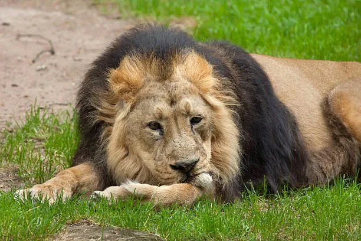
Jefferson Marin descansandoElefante-pigmeu-de-Bornéu
Nome: Roberto | Idade: 13 anos
Ordem: Proboscidea Família: Elephantidae Gênero: Elephas
Espécie / subespécie: Elephas maximus borneensis
Sexo: Masculino
Tempo no Zoo: 10 anos
Status de Conservação: Em Perigo (EN)
Habitat natural: Nordeste de Bornéu (Malásia e Indonésia)
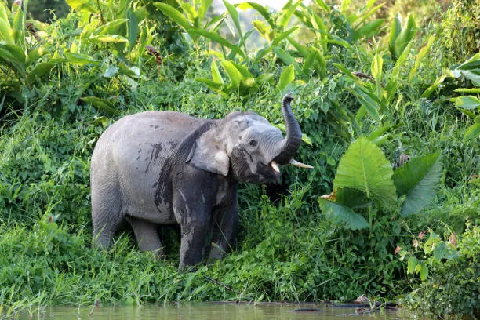
Roberto explorando seu espaçoJacaré-coroa
Nome: Jacazé | Idade: 18 anos
Ordem: Crocodylia Família: Alligatoridae Gênero: Paleosuchus
Espécie / subespécie: Paleosuchus trigonatus
Sexo: Feminino
Tempo no Zoo: 18 anos
Status de Conservação: Pouco Preocupante (LC)
Habitat natural: Amazônia e Guianas (América do Sul)
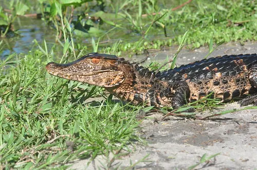
Jacazé em sua lagoaJacaré-anão
Nome: Eliadas | Idade: 5 anos
Ordem: Crocodylia Família: Alligatoridae Gênero: Paleosuchus
Espécie / subespécie: Paleosuchus palpebrosus
Sexo: Masculino
Tempo no Zoo: 5 anos
Status de Conservação: Pouco Preocupante (LC)
Habitat natural: Amazônia, Cerrado e Pantanal (América do Sul)
Observação: Possui albinismo
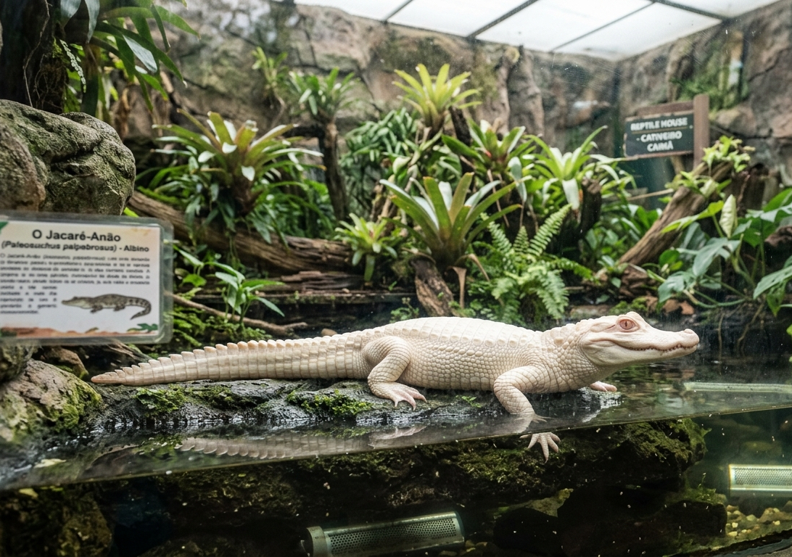
Eliadas em exibiçãoAvestruzes-comuns
Nome: Ronalda (mãe) | Idade: 30 anos
Ordem: Struthioniformes Família: Struthionidae Gênero: Struthio
Espécie / subespécie: Struthio camelus
Parentesco: Mãe
Sexo: Feminino
Tempo no Zoo: 10 anos
Status de Conservação: Pouco Preocupante (LC)
Habitat natural: África (savanas e regiões semiáridas)
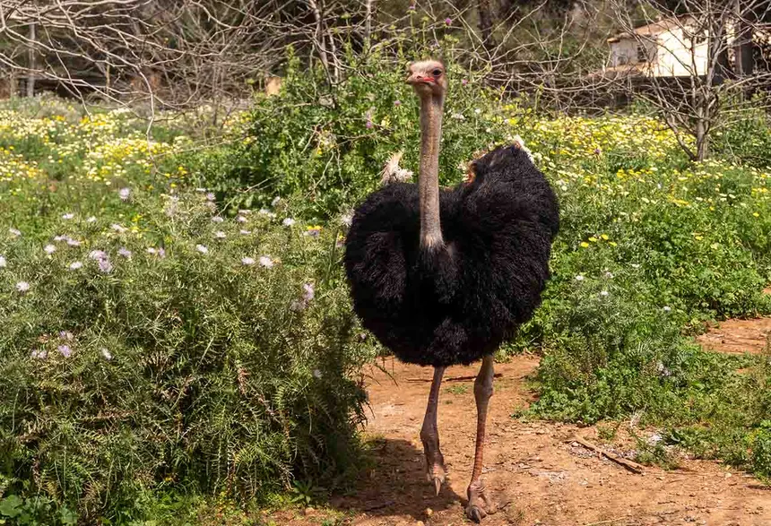
Ronalda PasseandoNome: Ronaldinho (filho) | Idade: 9 anos
Ordem: Struthioniformes Família: Struthionidae Gênero: Struthio
Espécie / subespécie: Struthio camelus
Parentesco: Filho
Sexo: Masculino
Tempo no Zoo: 9 anos
Status de Conservação: Pouco Preocupante (LC)
Habitat natural: África (savanas e regiões semiáridas)
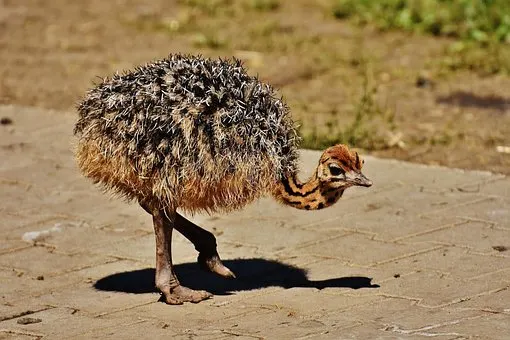
Ronaldinho caminhandoAxolotes
Nome: Adalberto | Idade: 3 anos
Ordem: Caudata Família: Ambystomatidae Gênero: Ambystoma
Espécie / subespécie: Ambystoma mexicanum
Coloração: Rosa
Sexo: Masculino
Tempo no Zoo: 2 anos
Habitat natural: Lago Xochimilco, México
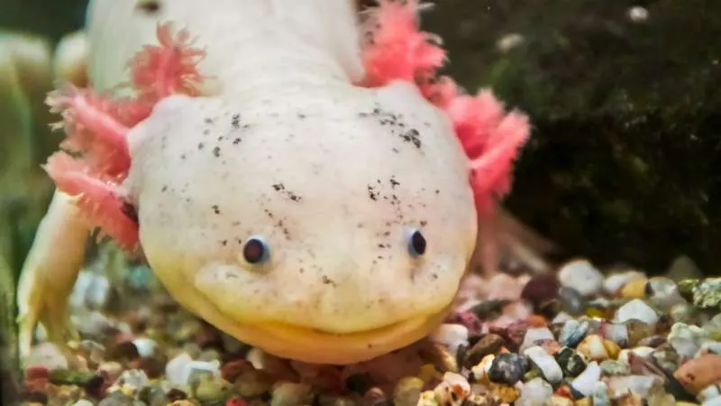
Adalberto gentilmente sorrindoNome: Pexe | Idade: 4 anos
Ordem: Caudata Família: Ambystomatidae Gênero: Ambystoma
Espécie / subespécie: Ambystoma mexicanum
Coloração: Preto
Sexo: Feminino
Tempo no Zoo: 2 anos
Habitat natural: Lago Xochimilco, México
Observação: Possui uma pata quebrada
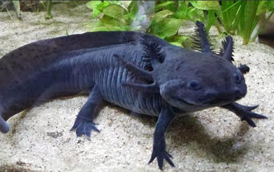
Pexe curtindo a águaNome: Cachalote | Idade: 7 anos
Ordem: Caudata Família: Ambystomatidae Gênero: Ambystoma
Espécie / subespécie: Ambystoma mexicanum
Coloração: Rosa
Sexo: Masculino
Tempo no Zoo: 2 anos
Habitat natural: Lago Xochimilco, México
Observação: Não possui uma pata
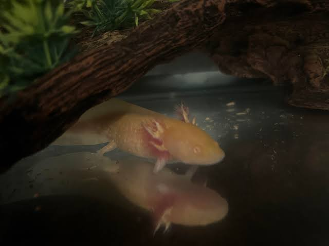
Cachalote passeando no aquárioNome: Verity | Idade: 1 anos
Ordem: Caudata Família: Ambystomatidae Gênero: Ambystoma
Espécie / subespécie: Ambystoma mexicanum
Coloração: Amarelo
Sexo: Feminino
Tempo no Zoo: 1 anos
Habitat natural: Lago Xochimilco, México
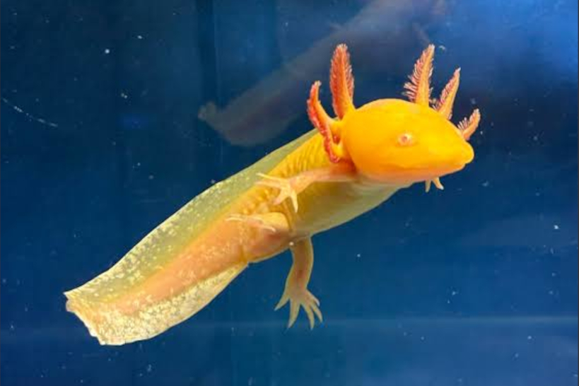
Olá, sou eu, é o VerityNome: Falsity | Idade: 6 meses
Ordem: Caudata Família: Ambystomatidae Gênero: Ambystoma
Espécie / subespécie: Ambystoma mexicanum
Coloração: Azulado
Sexo: Masculino
Tempo no Zoo: 6 meses
Habitat natural: Lago Xochimilco, México
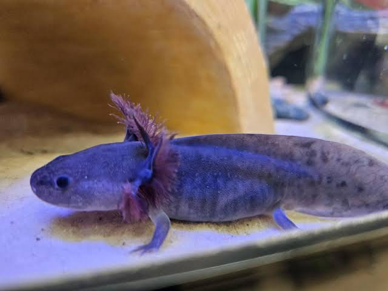
Falsity, Falsity, Falsity, Falsity, FlasityInscreva-se para uma visita!
Clique no botão abaixo e preencha seus dados para agendar uma visita ao nosso Zoológico!
Clique Aqui